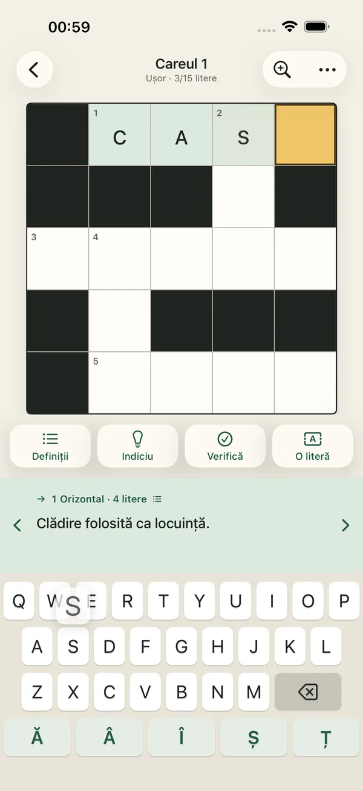
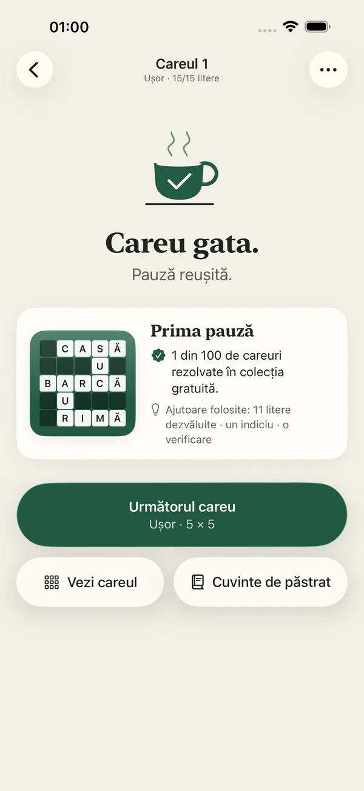
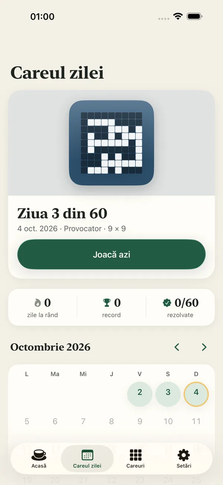
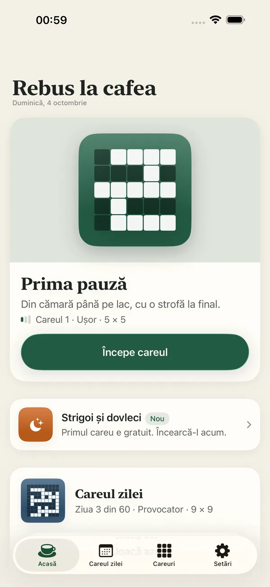

Rebus la cafea nu are reclame și nu va avea. Fără bannere peste careu, fără clipuri de 30 de secunde ca să primești un indiciu, fără ferestre care apar între careuri.
Aplicația se susține din Premium, plătit o singură dată, nu din atenția ta. Pauza de cafea rămâne a ta.
Bannere
Clipuri pentru indicii
Pop-up-uri
Urmărire
Cum arată pe iPhone
Capturi din aplicație. Totul în română, de la definiții la tastatură.

Careul Definiția sub grilă, patru ajutoare și tastatura cu rândul de diacritice.

Careu gata. Fără scor și fără cronometru. O ceașcă și atât.

Careul zilei O provocare 9 × 9 pe zi, din ziua în care deschizi aplicația.

Acasă Careul următor, pachetul nou și provocarea zilei, pe același ecran.
Făcut pentru cine iubește cuvintele
Un joc liniștit, gândit de la început pentru limba română. Șase definiții, cu răspunsurile date.
1Literele pe care alte jocuri le uită
ĂÂÎȘȚOrizontal · 5 litere
Au rândul lor deasupra tastaturii și căsuța lor în careu. A nu ține locul lui Ă, iar I nu ține locul lui Î.
2Vine o dată pe zi, după ora României
ZILNICVertical · 6 litere
„Careul zilei” e o serie gratuită de 60 de provocări 9 × 9. Ai ratat o zi? O găsești în arhivă.
3Te pune pe drumul bun fără să-ți dea răspunsul
INDICIUOrizontal · 7 litere
„Verifică”, „O literă” și „Indiciu” sunt gratuite. După ce rezolvi cuvântul, poți citi explicația.
4Unde poți juca, chiar și fără semnal
ORIUNDEVertical · 7 litere
Merge fără internet. Progresul se salvează pe telefon, automat, cât timp scrii.
5Te așteaptă pe celălalt dispozitiv
ICLOUDOrizontal · 6 litere
Sincronizarea prin iCloud e inclusă gratuit, pe dispozitivele care folosesc același cont.
6Liniștea unei pauze fără cronometru
TIHNĂVertical · 5 litere
Fără cronometru, penalizări sau cont nou. Doar tu și careul.
Strigoi și dovleci
Pachetul de toamnă: 10 careuri despre strigoi, moroi, iele, castele și noaptea de Sfântul Andrei.
Primul careu, „Musafiri deghizați”, e gratuit pentru toți.
Celelalte nouă sunt incluse în Premium, până la „Miezul nopții”, provocarea specială.
Eveniment în aplicație între 18 octombrie și 3 noiembrie.
3 Vertical · 4 litere Pasăre de noapte, rudă cu bufnița.
Începi gratuit. Premium, o singură dată.
Fără abonament și fără surprize: plătești o dată și primești și pachetele care vin.
100 de careuri principale, permanent gratuiteGratuit
„Careul zilei”: 60 de provocări 9 × 9Gratuit
Primul careu din „Strigoi și dovleci”Gratuit
Toate ajutoarele și explicațiileGratuit
Sincronizare prin iCloudGratuit
Fără reclame, pentru totdeaunaGratuit
40 de careuri în plus, printre care pachetul „Strigoi și dovleci”Premium
Pachetele tematice noi, incluse fără cost suplimentarPremium
Premium este o singură plată în App Store, fără abonament, și se restaurează oricând cu același cont. Prețul stabilit de Apple apare în aplicație înainte să confirmi cumpărarea.
Pentru o problemă tehnică, descrie ce s-a întâmplat și include versiunea aplicației și versiunea iOS. Dacă atașezi o captură, verifică să conțină doar informațiile pe care vrei să le trimiți.
Editor: Eddie Roman. Mesajele sunt folosite pentru a răspunde solicitării tale. Detalii în politica de confidențialitate.
Întrebări frecvente
Ce deblochează Premium?
Premium include 40 de careuri disponibile acum, printre care pachetul de toamnă „Strigoi și dovleci”. Pachetele tematice noi, adăugate periodic prin actualizările aplicației, sunt incluse fără cost suplimentar. Plătești o singură dată în App Store, fără abonament. Toate pachetele noi sunt incluse în aceeași achiziție și rămân în arhiva premium, accesibilă cumpărătorilor. Cele 100 de careuri gratuite rămân disponibile. Prețul furnizat de Apple este afișat în aplicație, înainte de confirmarea cumpărării.
Va avea aplicația reclame?
Nu. Rebus la cafea nu are reclame și nu va avea, nici în careurile gratuite, nici în Premium. Nu există bannere, clipuri pentru indicii sau ferestre între careuri. Aplicația se susține din achiziția unică Premium.
Cum restaurez o achiziție?
În Setări, apasă „Restaurează achizițiile”, folosind același cont App Store cu care ai cumpărat Premium. Restaurarea necesită o conexiune la internet. Dacă accesul nu apare, verifică acel cont și încearcă din nou. Apple explică și pașii de restaurare.
Când se salvează progresul?
Progresul se păstrează local pe dispozitiv, inclusiv offline. Scrierea se face după o scurtă pauză la tastare și când părăsești careul sau treci aplicația în fundal. Dacă apare un mesaj că salvarea nu a reușit, verifică spațiul liber și reîncearcă înainte să închizi aplicația. Sincronizarea iCloud se încearcă separat și depinde de conexiune, cont și condițiile sistemului.
Pot continua pe alt dispozitiv?
Da, prin iCloud, pe dispozitivele care folosesc același cont. Sincronizarea progresului este activată implicit și este disponibilă atât pentru gratuit, cât și pentru Premium. O poți opri din Setări sau poți cere o încercare prin „Sincronizează acum”. Actualizarea nu este garantată imediat. Se sincronizează progresul, selecția din fiecare careu și istoricul rezolvărilor; tema, vibrațiile și alegerea careului afișat rămân locale. „Restaurează achizițiile” recuperează separat accesul Premium prin contul App Store.
Ce se întâmplă dacă folosesc două dispozitive pentru același careu?
Aplicația păstrează o salvare întreagă după reguli stabile. O finalizare are prioritate, cu excepția unei reluări sau resetări explicite. Literele din salvări diferite nu se combină. Așteaptă reușita sincronizării înainte să continui pe celălalt dispozitiv.
Ce se întâmplă dacă schimb contul iCloud?
Sincronizarea se suspendă până când confirmi folosirea noului cont. Confirmarea permite trimiterea progresului local către acel cont. Transferul nu se face automat.
Cum șterg progresul?
În Setări, „Resetează tot progresul” golește imediat literele și statisticile locale. Resetarea se aplică celorlalte dispozitive după sincronizare, inclusiv după reactivarea ei. Cu sincronizarea oprită, copia iCloud nu se modifică imediat. Oprirea sincronizării sau ștergerea aplicației nu șterge copia iCloud existentă. Confirmarea resetării este necesară, iar achizițiile sunt păstrate.
Cum scriu diacriticele?
Folosește rândul Ă, Â, Î, Ș și Ț de deasupra tastaturii din aplicație. Acestea sunt litere distincte în careuri: A nu înlocuiește Ă sau Â, iar I nu înlocuiește Î. O literă ocupă o singură căsuță.
Ajutoarele sunt gratuite?
Da. „Verifică” marchează literele greșite, iar „O literă” completează o căsuță. „Indiciu” oferă o direcție de gândire fără să completeze litere; după rezolvarea cuvântului poți citi explicația. Ajutoarele sunt disponibile gratuit în colecțiile gratuite și în cele deblocate prin cumpărare.
Cum funcționează „Careul zilei”?
Este o serie de 60 de provocări gratuite, separate de cele 140 de careuri principale (100 gratuite și 40 Premium). Seria începe din ziua în care deschizi prima dată aplicația și se deschide câte o provocare pe zi, după ora României. Zilele trecute rămân accesibile în arhivă, iar cele viitoare sunt blocate. După ziua 60, toate provocările rămân în arhivă, pentru a reveni oricând.